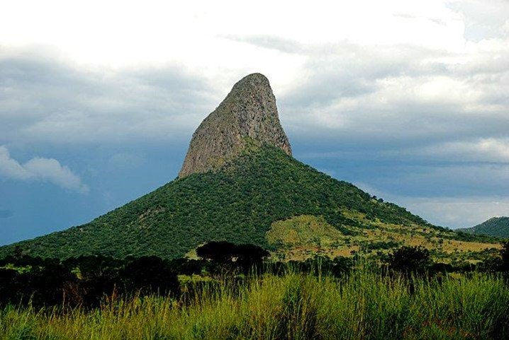
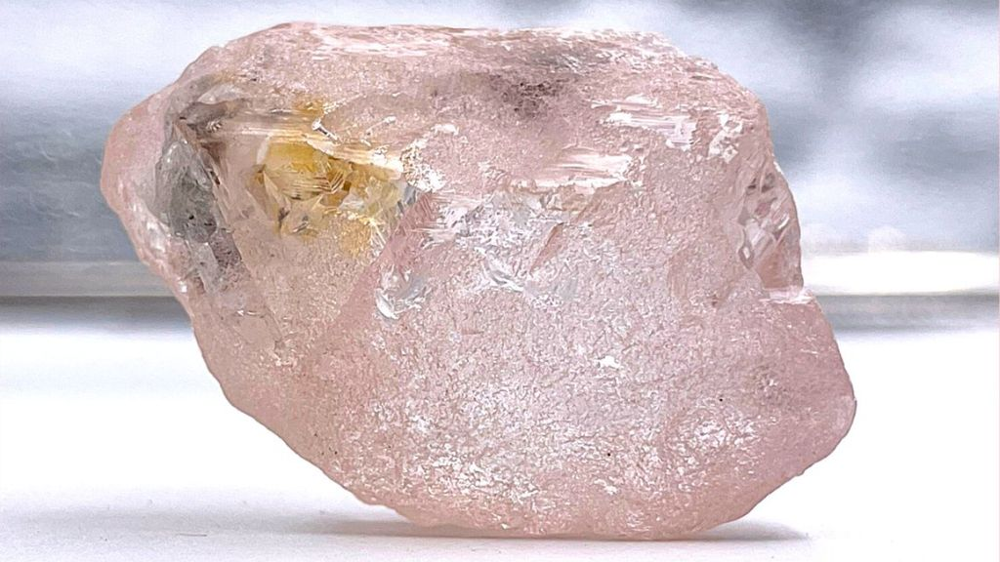
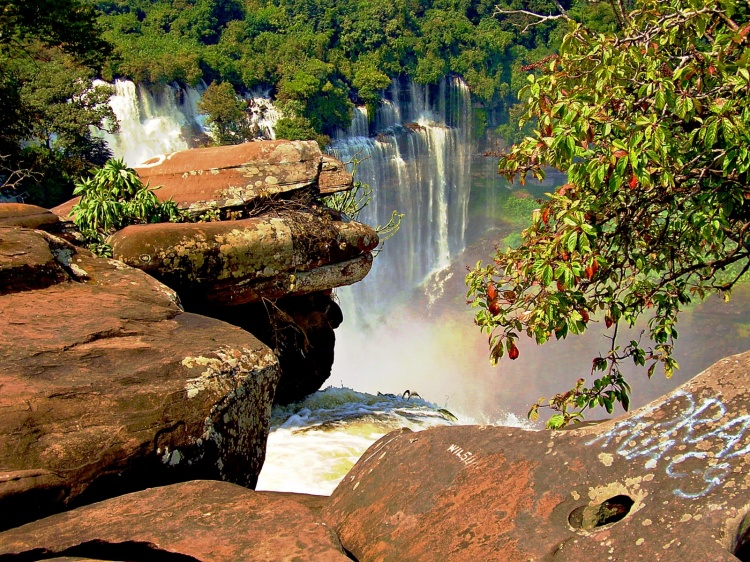

O Morro do Moco é o ponto mais alto da Angola, situado a 2620 metros acima do nível do mar.O país é rico em recursos naturais além do petróleo,como o diamante.As quedas de Calandula, na província angolana de Malanje,formam a segunda maior queda de água de África, com 100 metros de largura e 105 de altura